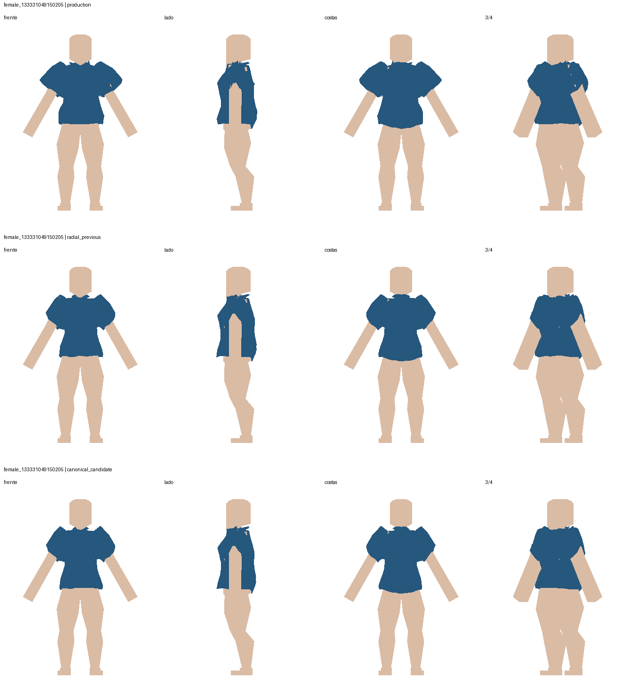
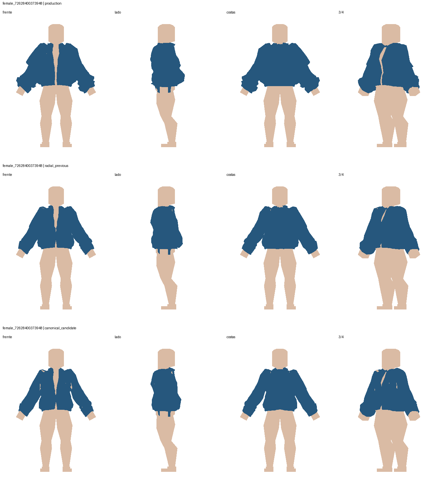
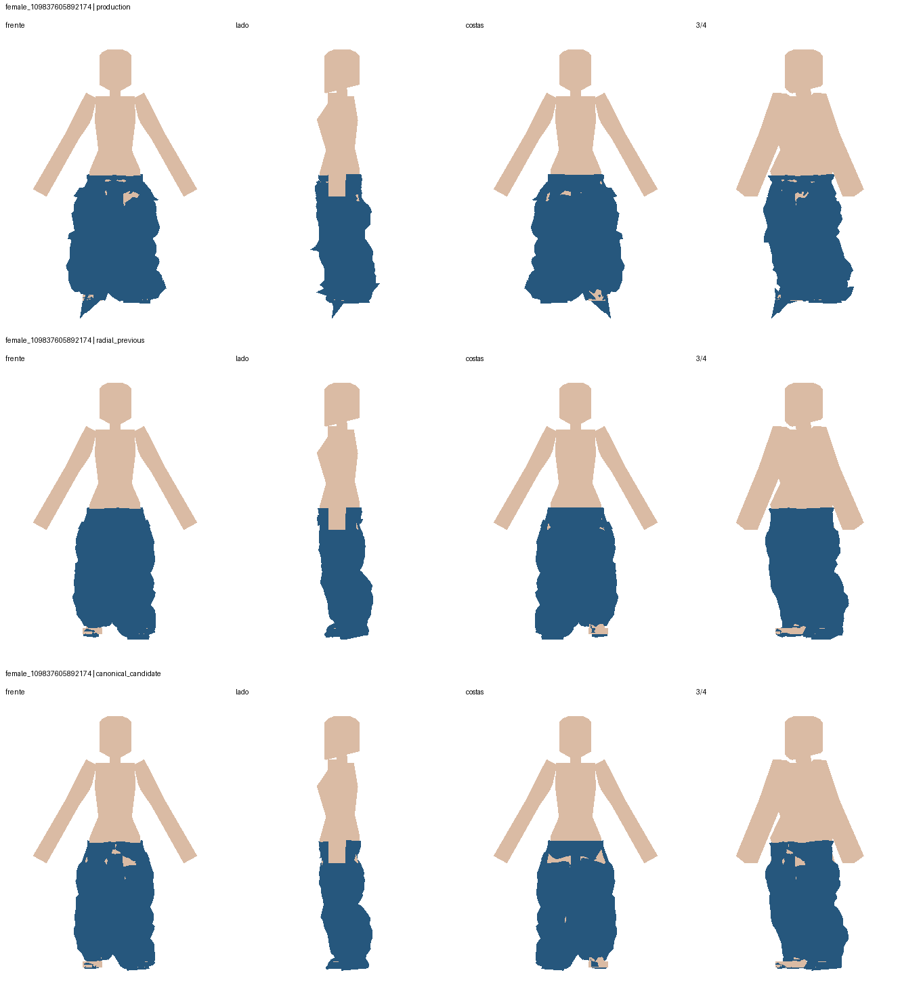
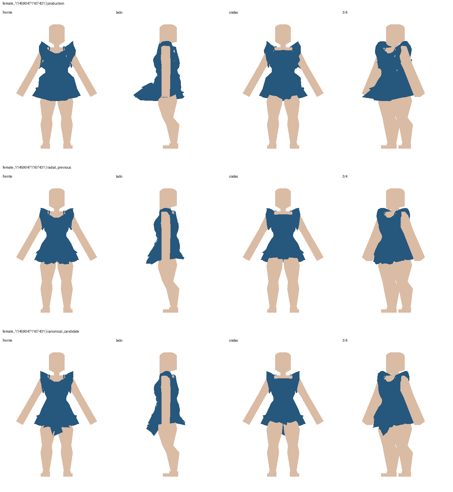
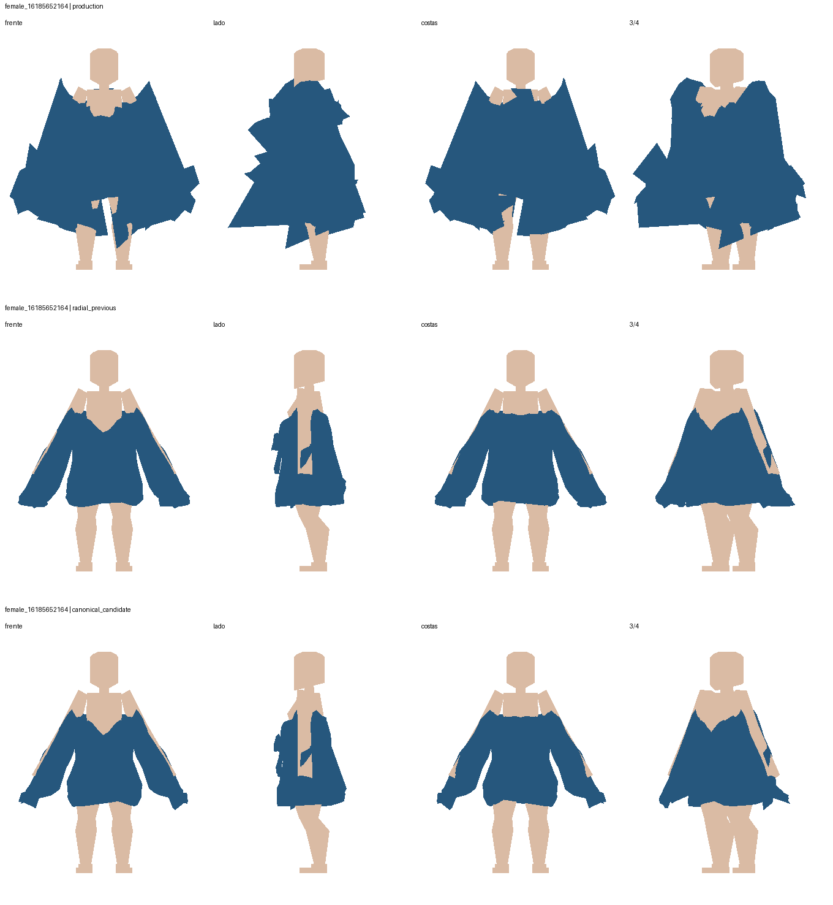
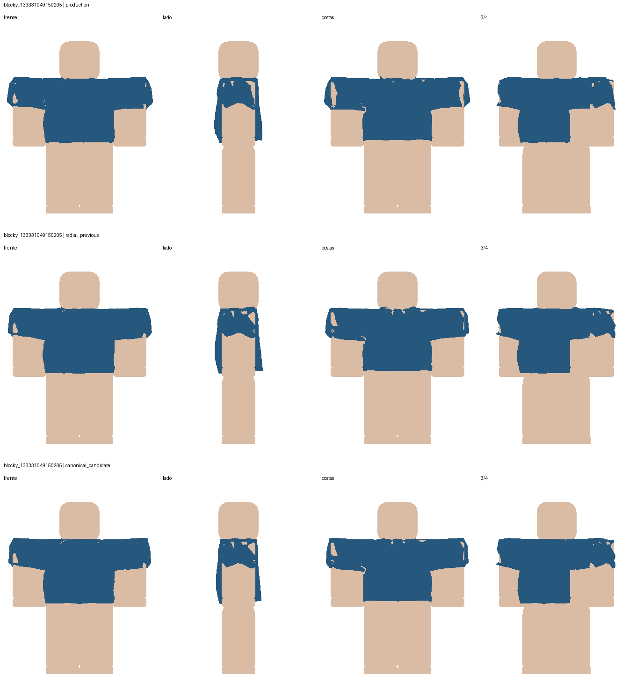

Rejeitada para integração. A invariância à exportação foi corrigida, mas jeans, vestido, jaqueta e suéter apresentam regressões. A camisa Blocky ainda penetra o corpo.
Linhas das imagens: produção, radial anterior + prisma, candidata canônica + mesmo prisma. Colunas: frente (câmera −Y), lado (+X), costas (+Y), 3/4. Corpo bege, roupa azul. Mesma câmera e escala isotrópica nas três variantes de cada caso; sem textura, luz ou descarte por normal.
Arestas e áreas normalizadas pela mesma escala RMS por caso. Amostras: vértices + centros das faces; contagens não ponderadas por área. Penetração medida nas componentes fechadas do corpo; duas componentes por corpo permanecem abertas. Invisibilidade por câmera não equivale a penetração.
* Em produção, essa coluna é um volume hipotético: o runtime não usa prismas. Nas outras variantes mede o volume efetivamente usado. ** Divergência contra normais transportadas pela cage interna é apenas um indicador, não contagem comprovada de faces invertidas.
Relatório técnico e reprodução · Exemplos concretos Blocky · Hashes dos arquivos
Métricas completas · Geometria NumPy
| Método | Arestas >3× / escala | Área <10% | Amostras dentro (%) | Vértices em prisma invertido* | Orientação divergente** |
|---|---|---|---|---|---|
| production | 344 | 3 | 3.603 | 16 | 447 |
| radial_previous | 149 | 7 | 2.302 | 83 | 366 |
| canonical_candidate | 150 | 8 | 2.252 | 78 | 328 |

Métricas completas · Geometria NumPy
| Método | Arestas >3× / escala | Área <10% | Amostras dentro (%) | Vértices em prisma invertido* | Orientação divergente** |
|---|---|---|---|---|---|
| production | 319 | 3 | 1.726 | 37 | 217 |
| radial_previous | 116 | 2 | 1.934 | 54 | 153 |
| canonical_candidate | 137 | 3 | 2.309 | 114 | 168 |

Métricas completas · Geometria NumPy
| Método | Arestas >3× / escala | Área <10% | Amostras dentro (%) | Vértices em prisma invertido* | Orientação divergente** |
|---|---|---|---|---|---|
| production | 584 | 69 | 7.653 | 187 | 521 |
| radial_previous | 76 | 50 | 2.152 | 172 | 239 |
| canonical_candidate | 64 | 108 | 11.196 | 629 | 402 |

Métricas completas · Geometria NumPy
| Método | Arestas >3× / escala | Área <10% | Amostras dentro (%) | Vértices em prisma invertido* | Orientação divergente** |
|---|---|---|---|---|---|
| production | 596 | 13 | 3.985 | 65 | 405 |
| radial_previous | 190 | 9 | 1.566 | 165 | 174 |
| canonical_candidate | 220 | 3 | 1.58 | 210 | 207 |

Métricas completas · Geometria NumPy
| Método | Arestas >3× / escala | Área <10% | Amostras dentro (%) | Vértices em prisma invertido* | Orientação divergente** |
|---|---|---|---|---|---|
| production | 2175 | 18 | 4.09 | 817 | 1546 |
| radial_previous | 43 | 4 | 3.469 | 319 | 366 |
| canonical_candidate | 47 | 19 | 4.549 | 558 | 533 |

Métricas completas · Geometria NumPy
| Método | Arestas >3× / escala | Área <10% | Amostras dentro (%) | Vértices em prisma invertido* | Orientação divergente** |
|---|---|---|---|---|---|
| production | 1219 | 3 | 25.021 | 90 | 412 |
| radial_previous | 957 | 1 | 27.823 | 263 | 460 |
| canonical_candidate | 952 | 9 | 22.669 | 288 | 508 |
